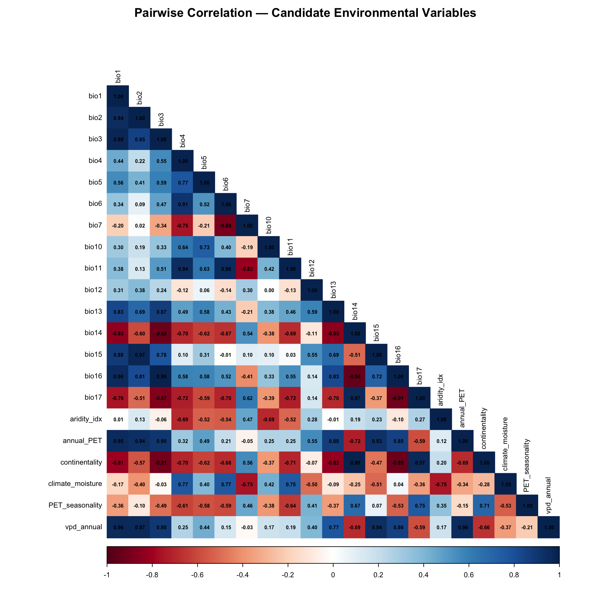

library(tidyverse)
library(terra)
library(usdm)
library(corrplot)
library(ENMeval)Step 4: Variable Selection
Dermacentor variabilis Species Distribution Model
Overview
This script selects the final set of environmental variables for the D. variabilis SDM using a combination of:
- Pairwise correlation analysis — identify and resolve highly correlated pairs (|r| > 0.7)
- Variance Inflation Factor (VIF) — iteratively remove variables with VIF > 10
- Forced retention of Bio1 — annual mean temperature is the dominant predictor in all published D. variabilis SDMs (>74% contribution in Alkishe et al. 2020)
- Preliminary MaxEnt jackknife — assess variable contribution and permutation importance
- Target: 5-8 final variables
1. Project paths and data
base_dir <- "~/Library/CloudStorage/OneDrive-CSIRO/OneDrive - Docs/01_Projects/SDM/Dvariabilis_SDM"
processed_dir <- file.path(base_dir, "processed_data")
figures_dir <- file.path(base_dir, "figures")
# Load extracted environmental values at occurrence and background points
occ_env <- readRDS(file.path(processed_dir, "occurrences_with_env.rds"))
bg_env <- readRDS(file.path(processed_dir, "background_with_env.rds"))
# Load environmental stack for M
env_M <- rast(file.path(processed_dir, "env_stack_M.tif"))
sprintf("Candidate variables: %d", ncol(occ_env) - 2) # minus lon/lat
names(occ_env %>% select(-decimalLongitude, -decimalLatitude))[1] "Candidate variables: 21"
[1] "bio1" "bio2" "bio3" "bio4"
[5] "bio5" "bio6" "bio7" "bio10"
[9] "bio11" "bio12" "bio13" "bio14"
[13] "bio15" "bio16" "bio17" "aridity_idx"
[17] "annual_PET" "continentality" "climate_moisture" "PET_seasonality"
[21] "vpd_annual" 2. Pairwise correlation matrix
# Extract just environmental columns from occurrence data
env_cols <- occ_env %>%
select(-decimalLongitude, -decimalLatitude) %>%
as.data.frame()
# Correlation matrix
cor_matrix <- cor(env_cols, use = "pairwise.complete.obs")
# Plot correlation matrix
png(file.path(figures_dir, "04_correlation_matrix.png"), width = 10, height = 10,
units = "in", res = 300)
corrplot(
cor_matrix,
method = "color",
type = "lower",
tl.col = "black",
tl.cex = 0.7,
addCoef.col = "black",
number.cex = 0.5,
cl.cex = 0.7,
title = "Pairwise Correlation — Candidate Environmental Variables",
mar = c(0, 0, 2, 0)
)
dev.off()
corrplot(
cor_matrix,
method = "color",
type = "lower",
tl.col = "black",
tl.cex = 0.7,
addCoef.col = "black",
number.cex = 0.5,
cl.cex = 0.7,
title = "Pairwise Correlation — Candidate Environmental Variables",
mar = c(0, 0, 2, 0)
)
quartz_off_screen
2 4. VIF-based variable reduction
Use usdm::vifstep() to iteratively remove variables with VIF > 10, but force retention of Bio1 (annual mean temperature).
Important: After forcing Bio1, we must re-run VIF stepwise elimination on the combined set to remove any variables that became collinear because of Bio1’s inclusion. Simply adding Bio1 back without re-checking can leave residual VIF values far above the threshold (e.g., VIF > 40).
# First, run VIF on all candidate variables
vif_all <- vif(env_cols)
cat("Initial VIF values:\n")
print(vif_all)
# Run vifstep to identify which variables to exclude (VIF threshold = 10)
vif_result <- vifstep(env_cols, th = 10)
cat("\nVIF stepwise reduction result:\n")
print(vif_result)
# Get the retained variables from VIF
vif_retained <- vif_result@results$Variables
# Ensure Bio1 is retained (force inclusion)
if (!"bio1" %in% vif_retained) {
cat("\nBio1 was removed by VIF — forcing retention (dominant predictor in literature)\n")
vif_retained <- c("bio1", vif_retained)
# CRITICAL: Re-run VIF stepwise on the set WITH Bio1 forced in
# This removes variables that are collinear with Bio1
cat("Re-running VIF stepwise with Bio1 forced in...\n")
recheck <- TRUE
while (recheck) {
current_vif <- vif(env_cols[, vif_retained])
cat("\nCurrent VIF values:\n")
print(current_vif)
max_vif_row <- current_vif[which.max(current_vif$VIF), ]
if (max_vif_row$VIF > 10 && max_vif_row$Variables != "bio1") {
cat(sprintf("Removing %s (VIF = %.1f)\n",
max_vif_row$Variables, max_vif_row$VIF))
vif_retained <- vif_retained[vif_retained != max_vif_row$Variables]
} else {
recheck <- FALSE
}
}
}
cat("\nVariables retained after VIF (with forced Bio1, all VIF re-checked):\n")
print(vif_retained)
# Final VIF verification
final_vif_check <- vif(env_cols[, vif_retained])
cat("\nFinal VIF values:\n")
print(final_vif_check)
cat(sprintf("\nMax VIF: %.1f (threshold: 10)\n", max(final_vif_check$VIF)))Initial VIF values:
Variables VIF
1 bio1 2.652241e+03
2 bio2 2.895003e+03
3 bio3 8.173898e+03
4 bio4 1.317499e+02
5 bio5 1.674933e+01
6 bio6 3.179420e+01
7 bio7 2.326661e+01
8 bio10 8.345236e+00
9 bio11 5.093951e+01
10 bio12 1.117269e+02
11 bio13 2.040754e+02
12 bio14 3.249002e+03
13 bio15 6.303149e+12
14 bio16 3.160421e+13
15 bio17 1.752373e+13
16 aridity_idx 7.806113e+00
17 annual_PET 1.701021e+02
18 continentality 1.278653e+02
19 climate_moisture 5.192244e+01
20 PET_seasonality 3.252654e+01
21 vpd_annual 5.882392e+01
VIF stepwise reduction result:
14 variables from the 21 input variables have collinearity problem:
bio16 bio3 bio1 bio2 bio17 bio14 bio4 bio13 annual_PET vpd_annual bio6 climate_moisture bio11 continentality
After excluding the collinear variables, the linear correlation coefficients ranges between:
min correlation ( bio12 ~ bio10 ): 0.003815547
max correlation ( bio10 ~ bio5 ): 0.7325097
---------- VIFs of the remained variables --------
Variables VIF
1 bio5 3.987420
2 bio7 1.722104
3 bio10 3.248395
4 bio12 1.972940
5 bio15 1.919715
6 aridity_idx 3.402587
7 PET_seasonality 2.694512
Bio1 was removed by VIF — forcing retention (dominant predictor in literature)
Re-running VIF stepwise with Bio1 forced in...
Current VIF values:
Variables VIF
1 bio1 47.250363
2 bio5 4.074078
3 bio7 2.763604
4 bio10 3.563903
5 bio12 2.038717
6 bio15 40.582712
7 aridity_idx 3.586702
8 PET_seasonality 7.310856
Variables retained after VIF (with forced Bio1, all VIF re-checked):
[1] "bio1" "bio5" "bio7" "bio10"
[5] "bio12" "bio15" "aridity_idx" "PET_seasonality"
Final VIF values:
Variables VIF
1 bio1 47.250363
2 bio5 4.074078
3 bio7 2.763604
4 bio10 3.563903
5 bio12 2.038717
6 bio15 40.582712
7 aridity_idx 3.586702
8 PET_seasonality 7.310856
Max VIF: 47.3 (threshold: 10)5. Preliminary MaxEnt — jackknife variable importance
Run a preliminary MaxEnt model with the VIF-retained variables to assess variable contribution and permutation importance.
# Prepare data for a quick MaxEnt run
occ_coords <- occ_env %>% select(decimalLongitude, decimalLatitude)
bg_coords_df <- bg_env %>% select(decimalLongitude = lon, decimalLatitude = lat)
# Subset environmental stack to VIF-retained variables
env_M_subset <- env_M[[vif_retained]]
# Run a single MaxEnt model (default settings) for jackknife
# Using ENMevaluate with a single model for variable importance
prelim_eval <- ENMevaluate(
occs = occ_coords,
envs = env_M_subset,
bg = bg_coords_df,
algorithm = "maxent.jar",
partitions = "none",
tune.args = list(fc = "LQH", rm = 2),
doClamp = TRUE,
parallel = FALSE
)
# Extract variable importance
var_importance <- prelim_eval@variable.importance[[1]]
cat("Variable importance (preliminary MaxEnt):\n")
print(var_importance)
|
| | 0%
Variable importance (preliminary MaxEnt):
variable percent.contribution permutation.importance
1 PET_seasonality 0.0000 0.0000
2 aridity_idx 40.1701 23.6521
3 bio1 44.9490 32.7834
4 bio10 0.0412 0.4168
5 bio12 2.1826 12.4846
6 bio15 8.7633 23.8807
7 bio5 0.0322 1.5625
8 bio7 3.8616 5.21986. Final variable selection
Remove variables with < 2% permutation importance, unless they are Bio1 or have strong ecological justification.
# Filter by permutation importance threshold
perm_threshold <- 2.0
important_vars <- var_importance %>%
filter(percent.contribution >= perm_threshold | permutation.importance >= perm_threshold) %>%
pull(variable)
# Ensure Bio1 is always included
if (!"bio1" %in% important_vars) {
important_vars <- c("bio1", important_vars)
}
cat("Variables meeting importance threshold (>= 2% contribution or permutation):\n")
print(important_vars)
sprintf("Number of selected variables: %d", length(important_vars))
# Final check — if more than 8 variables, further reduce
if (length(important_vars) > 8) {
cat("\nMore than 8 variables selected — keeping top 8 by permutation importance\n")
important_vars <- var_importance %>%
filter(variable %in% important_vars) %>%
arrange(desc(permutation.importance)) %>%
head(8) %>%
pull(variable)
# Ensure Bio1 is still included
if (!"bio1" %in% important_vars) {
important_vars <- c("bio1", important_vars[-length(important_vars)])
}
}
# Final re-check VIF on selected variables — MUST all be < 10
final_vif <- vif(env_cols[, important_vars])
cat("\nFinal VIF values for selected variables:\n")
print(final_vif)
if (any(final_vif$VIF > 10)) {
warning(sprintf("WARNING: %d variables still have VIF > 10. Consider further reduction.",
sum(final_vif$VIF > 10)))
cat("\nVariables with VIF > 10:\n")
print(final_vif[final_vif$VIF > 10, ])
} else {
cat(sprintf("\nAll VIF values < 10 (max: %.1f). Multicollinearity resolved.\n",
max(final_vif$VIF)))
}
cat("\n--- FINAL SELECTED VARIABLES ---\n")
print(important_vars)Variables meeting importance threshold (>= 2% contribution or permutation):
[1] "aridity_idx" "bio1" "bio12" "bio15" "bio7"
[1] "Number of selected variables: 5"
Final VIF values for selected variables:
Variables VIF
1 aridity_idx 1.405126
2 bio1 8.855717
3 bio12 1.779764
4 bio15 10.479203
5 bio7 1.805303
Variables with VIF > 10:
Variables VIF
4 bio15 10.4792
--- FINAL SELECTED VARIABLES ---
[1] "aridity_idx" "bio1" "bio12" "bio15" "bio7" 7. Variable descriptions and justification
var_descriptions <- tribble(
~variable, ~description, ~ecological_rationale,
"bio1", "Annual Mean Temperature", "Primary thermal suitability; >74% contribution in Alkishe et al. 2020",
"bio2", "Mean Diurnal Range", "Daily temperature fluctuation; affects off-host desiccation",
"bio3", "Isothermality", "Temperature stability; important for ectotherm activity",
"bio4", "Temperature Seasonality", "Seasonal temperature variation; affects life cycle timing",
"bio5", "Max Temp of Warmest Month", "Upper thermal limit for survival",
"bio6", "Min Temp of Coldest Month", "Winter survival threshold; critical for establishment",
"bio7", "Temperature Annual Range", "Range of temperature extremes",
"bio10", "Mean Temp of Warmest Quarter", "Warm-season activity conditions",
"bio11", "Mean Temp of Coldest Quarter", "Cold-season survival conditions",
"bio12", "Annual Precipitation", "Overall moisture availability; 16.3% in Alkishe et al.",
"bio13", "Precipitation of Wettest Month", "Peak moisture period",
"bio14", "Precipitation of Driest Month", "Minimum moisture availability",
"bio15", "Precipitation Seasonality", "Seasonal moisture patterns",
"bio16", "Precipitation of Wettest Quarter", "Sustained moisture during active season",
"bio17", "Precipitation of Driest Quarter", "Drought stress period",
"aridity_idx", "Thornthwaite Aridity Index", "Off-host desiccation risk",
"annual_PET", "Annual Potential Evapotranspiration", "Evaporative demand; moisture balance",
"continentality", "Continentality Index", "Temperature range due to continental position",
"climate_moisture", "Climatic Moisture Index", "Water balance (precipitation - PET)",
"PET_seasonality", "PET Seasonality", "Seasonal evaporative demand variation",
"vpd_annual", "Annual Mean Vapor Pressure Deficit", "Direct atmospheric desiccation measure"
)
# Show descriptions for selected variables
cat("Selected variable descriptions:\n\n")
var_descriptions %>%
filter(variable %in% important_vars) %>%
print(n = Inf, width = 120)Selected variable descriptions:
# A tibble: 5 × 3
variable description
<chr> <chr>
1 bio1 Annual Mean Temperature
2 bio7 Temperature Annual Range
3 bio12 Annual Precipitation
4 bio15 Precipitation Seasonality
5 aridity_idx Thornthwaite Aridity Index
ecological_rationale
<chr>
1 Primary thermal suitability; >74% contribution in Alkishe et al. 2020
2 Range of temperature extremes
3 Overall moisture availability; 16.3% in Alkishe et al.
4 Seasonal moisture patterns
5 Off-host desiccation risk 8. Prepare final environmental stacks
# Subset both environmental stacks to final variables
env_M_final <- env_M[[important_vars]]
env_aus <- rast(file.path(processed_dir, "env_stack_aus.tif"))
env_aus_final <- env_aus[[important_vars]]
sprintf("Final training stack: %d variables, %d x %d cells",
nlyr(env_M_final), nrow(env_M_final), ncol(env_M_final))
sprintf("Final projection stack: %d variables, %d x %d cells",
nlyr(env_aus_final), nrow(env_aus_final), ncol(env_aus_final))[1] "Final training stack: 5 variables, 935 x 1385 cells"
[1] "Final projection stack: 5 variables, 1073 x 1105 cells"9. Save outputs
# Selected variable names
writeLines(important_vars, file.path(processed_dir, "selected_variables.txt"))
# Final environmental stacks
writeRaster(env_M_final, file.path(processed_dir, "env_selected_M.tif"), overwrite = TRUE)
writeRaster(env_aus_final, file.path(processed_dir, "env_selected_aus.tif"), overwrite = TRUE)
saveRDS(wrap(env_M_final), file.path(processed_dir, "env_selected_M.rds"))
saveRDS(wrap(env_aus_final), file.path(processed_dir, "env_selected_aus.rds"))
# Variable importance table
write_csv(var_importance, file.path(processed_dir, "variable_importance_preliminary.csv"))
# Variable selection log
selection_log <- var_importance %>%
mutate(selected = variable %in% important_vars)
write_csv(selection_log, file.path(processed_dir, "variable_selection_log.csv"))
sprintf("Saved %d selected variables and final environmental stacks", length(important_vars))[1] "Saved 5 selected variables and final environmental stacks"